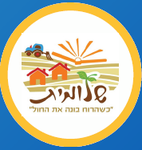

What is the Goal of Project Acheinu
מהי מטרת פרויקט אחינו
We all felt the unity in Am Yisrael right after October 7, 2023. The stories of love and devotion across all spectrums of our nation were endless. Now, a year and a half later, the call of the hour is to hold onto that unity. We need to ensure that we do not revert back to the pre-October 7th status quo. We need to break out of our comfort zones and reach out to members of Am Yisrael who are different from ourselves.
That is where Project Acheinu comes in!
This Purim, each community will partner with a neighboring community who is different from their own to sing, dance, bring Mishloach Manot, and most importantly connect.
Haman’s main claim against the Jews in the Megillah was that we were a divided nation. It is time for us to combat that and show ourselves, and the world, that we are united and stronger than ever before.
What is Inspiration for Project Acheinu
מהי ההשראה לפרויקט אחינו
This project was inspired by the community of Shlomit. Every year, on Purim, the residents of Shlomit travel to Kibbutz Prigan to give Mishloach Manot. On Simchat Torah 5784, terrorists stormed into Prigan, and the brave security team of Shlomit gave their lives to save their friends. On the surface, these two communities -one religious and one non-religious - had little in common. But they didn’t allow their differences to stand in the way of love and devotion to one another.
Get Involved
הצטרפו אלינו
We invite you to get involved and be part of this meaningful initiative.
To get your community/shul/school started, please reach out to:
Shana Rapps via WhatsApp: +972-54-729-9194